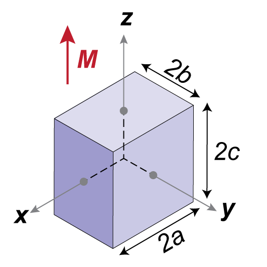
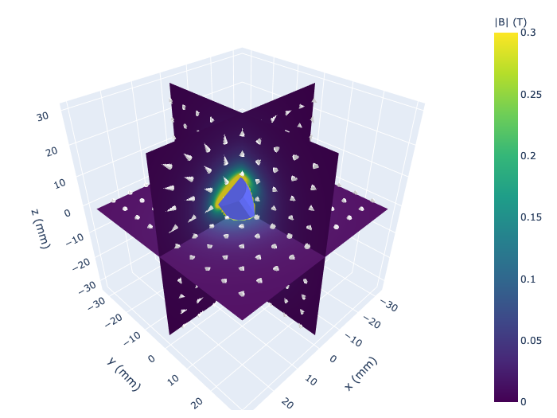
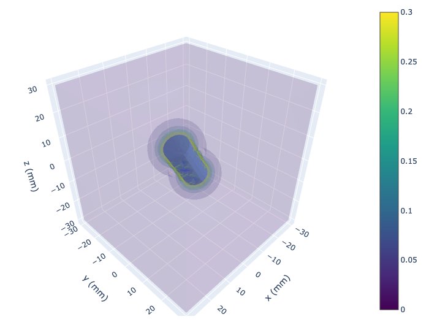
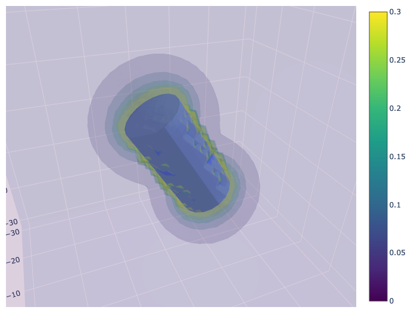
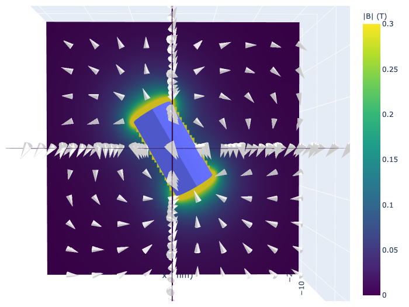

3D Plotting
All 3D plotting functions use plotly as the backend, providing interactive visualizations that can be rotated, zoomed, and panned.
Dependencies
These functions require plotly to be installed:
pip install plotly
Available Functions
| Function | Description |
|---|---|
plot_magnet() |
Render 3D magnets only (no field) |
slice_plot() |
Plot pre-calculated field data on 2D slices |
slice_quickplot() |
Calculate and plot field on 2D slices in one step |
volume_plot() |
Plot pre-calculated field data as 3D volume |
volume_quickplot() |
Calculate and plot field as 3D volume in one step |
plot_magnet
Renders all instantiated 3D magnets as interactive plotly meshes.
from pymagnet.plots import plot_magnet
Parameters:
| Parameter | Type | Default | Description |
|---|---|---|---|
unit |
str | "mm" |
Unit label for axis titles |
magnet_opacity |
float | 1.0 |
Opacity of rendered magnets (0.0 to 1.0) |
Returns:
| Type | Description |
|---|---|
Figure |
Plotly figure object |
Example:
import pymagnet as pm
from pymagnet.plots import plot_magnet
pm.reset()
pm.magnets.Prism(Jr=1.0, center=(0, 0, 0), size=(10, 10, 5))
pm.magnets.Cylinder(Jr=1.0, center=(20, 0, 0), radius=5, length=10)
fig = plot_magnet(unit="mm", magnet_opacity=0.8)

Slice Plots
Slice plots display 2D cross-sections of the magnetic field in 3D space. These are useful for visualizing field distributions on specific planes (XY, XZ, or YZ).
slice_plot
Plots magnetic field data on pre-calculated slices. Use this when you have already computed the field data and want more control over the calculation.
from pymagnet.plots import slice_plot
Parameters:
| Parameter | Type | Default | Description |
|---|---|---|---|
data_dict |
dict | required | Dictionary containing slice data (see format below) |
opacity |
float | 0.8 |
Opacity of field surface |
magnet_opacity |
float | 1.0 |
Opacity of rendered magnets |
cone_opacity |
float | 1.0 |
Opacity of vector cones |
cmin |
float | 0 |
Minimum value for colorscale |
cmax |
float | 0.5 |
Maximum value for colorscale |
colorscale |
str | "viridis" |
Plotly colorscale name |
num_arrows |
int | None |
Number of vector arrows to display (None = no arrows) |
show_magnets |
bool | True |
Whether to render magnets |
Data Dictionary Format:
data_dict = {
"xy": {"points": Point_Array3, "field": Field3},
"xz": {"points": Point_Array3, "field": Field3},
"yz": {"points": Point_Array3, "field": Field3},
}
Returns:
| Type | Description |
|---|---|
tuple[Figure, list] |
Plotly figure and list of data objects |
Example:
import pymagnet as pm
from pymagnet.plots import slice_plot
pm.reset()
pm.magnets.Prism(Jr=1.0, center=(0, 0, 0), size=(10, 10, 5))
# Calculate field on XY plane at z=0
points = pm.slice3D(plane="xy", max1=20, max2=20, slice_value=0, num_points=50)
field = pm.get_field_3D(points)
data_dict = {"xy": {"points": points, "field": field}}
fig, data_objects = slice_plot(data_dict, cmin=0, cmax=0.3)
slice_quickplot
Convenience function that calculates the magnetic field and plots slices in one step.
from pymagnet.plots import slice_quickplot
Parameters:
| Parameter | Type | Default | Description |
|---|---|---|---|
max1 |
float | 30 |
Maximum value for first axis |
max2 |
float | 30 |
Maximum value for second axis |
min1 |
float | -max1 |
Minimum value for first axis |
min2 |
float | -max2 |
Minimum value for second axis |
slice_value |
float | 0.0 |
Position of slice on the third axis |
unit |
str | "mm" |
Unit label for axes |
num_points |
int | 100 |
Number of points per axis |
planes |
list | ["xy", "xz", "yz"] |
List of planes to plot |
opacity |
float | 0.8 |
Opacity of field surface |
magnet_opacity |
float | 1.0 |
Opacity of rendered magnets |
cone_opacity |
float | 1.0 |
Opacity of vector cones |
cmin |
float | 0 |
Minimum value for colorscale |
cmax |
float | 0.5 |
Maximum value for colorscale |
colorscale |
str | "viridis" |
Plotly colorscale name |
num_arrows |
int | None |
Number of vector arrows per axis |
show_magnets |
bool | True |
Whether to render magnets |
Returns:
| Type | Description |
|---|---|
tuple[Figure, dict, list] |
Plotly figure, cached data dictionary, and list of data objects |
Example:
import pymagnet as pm
from pymagnet.plots import slice_quickplot
pm.reset()
pm.magnets.Prism(Jr=1.0, center=(0, 0, 0), size=(10, 10, 5))
fig, cache, data_objects = slice_quickplot(
max1=20,
max2=20,
planes=["xy", "xz"],
cmin=0,
cmax=0.3,
num_arrows=10,
)

Note
The cache return value contains the calculated points and field data for each plane, which can be reused for further analysis or re-plotting with different visualization settings.
Volume Plots
Volume plots display the magnetic field as a 3D isosurface visualization, showing regions of equal field magnitude.
volume_plot
Plots magnetic field data as a 3D volume. Use this when you have already computed the field data on a 3D grid.
from pymagnet.plots import volume_plot
Parameters:
| Parameter | Type | Default | Description |
|---|---|---|---|
points |
Point_Array3 | required | 3D coordinate grid |
field |
Field3 | required | Magnetic field data |
opacity |
float | 0.3 |
Overall opacity of volume |
opacityscale |
str/list | None |
Opacity scaling ("normal", "invert", or custom list) |
magnet_opacity |
float | 1.0 |
Opacity of rendered magnets |
cone_opacity |
float | 1.0 |
Opacity of vector cones |
cmin |
float | 0 |
Minimum value for colorscale |
cmax |
float | 0.5 |
Maximum value for colorscale |
num_levels |
int | 5 |
Number of isosurface levels |
colorscale |
str | "viridis" |
Plotly colorscale name |
num_arrows |
int | None |
Number of vector arrows |
show_magnets |
bool | True |
Whether to render magnets |
Returns:
| Type | Description |
|---|---|
tuple[Figure, list] |
Plotly figure and list of data objects |
Example:
import pymagnet as pm
from pymagnet.plots import volume_plot
pm.reset()
pm.magnets.Sphere(Jr=1.0, center=(0, 0, 0), radius=5)
points = pm.grid3D(xmax=15, ymax=15, zmax=15, num_points=30)
field = pm.get_field_3D(points)
fig, data_objects = volume_plot(
points,
field,
cmin=0,
cmax=0.2,
num_levels=8,
opacity=0.2,
)
volume_quickplot
Convenience function that calculates the magnetic field on a 3D grid and plots it in one step.
from pymagnet.plots import volume_quickplot
Parameters:
| Parameter | Type | Default | Description |
|---|---|---|---|
num_points |
int | 30 |
Number of points per axis |
unit |
str | "mm" |
Unit label for axes |
xmax |
float | 30 |
Maximum x value |
ymax |
float | 30 |
Maximum y value |
zmax |
float | 30 |
Maximum z value |
xmin |
float | -xmax |
Minimum x value |
ymin |
float | -ymax |
Minimum y value |
zmin |
float | -zmax |
Minimum z value |
opacity |
float | 0.3 |
Overall opacity of volume |
opacityscale |
str/list | None |
Opacity scaling |
magnet_opacity |
float | 1.0 |
Opacity of rendered magnets |
cone_opacity |
float | 1.0 |
Opacity of vector cones |
cmin |
float | 0 |
Minimum value for colorscale |
cmax |
float | 0.5 |
Maximum value for colorscale |
num_levels |
int | 5 |
Number of isosurface levels |
colorscale |
str | "viridis" |
Plotly colorscale name |
num_arrows |
int | None |
Number of vector arrows |
show_magnets |
bool | True |
Whether to render magnets |
Returns:
| Type | Description |
|---|---|
tuple[Figure, dict, list] |
Plotly figure, cached data dictionary, and list of data objects |
Example:
import pymagnet as pm
from pymagnet.plots import volume_quickplot
pm.reset()
pm.magnets.Cylinder(Jr=1.0, center=(0, 0, 0), radius=5, length=10)
fig, cache, data_objects = volume_quickplot(
xmax=20,
ymax=20,
zmax=20,
num_points=25,
cmin=0,
cmax=0.3,
num_levels=6,
opacityscale="normal",
)

Opacity Scaling
The opacityscale parameter in volume plots controls how opacity varies with field magnitude:
"normal": Higher field values are more opaque"invert": Lower field values are more opaque (useful for seeing into strong-field regions)- Custom list: Define your own opacity mapping as
[[value, opacity], ...]
Example with inverted opacity:
fig, cache, data_objects = volume_quickplot(
xmax=20,
ymax=20,
zmax=20,
opacityscale="invert",
cmin=0,
cmax=0.5,
)

Vector Arrows
Both slice and volume plots support displaying vector arrows (cones) to show field direction:
fig, cache, data_objects = slice_quickplot(
max1=20,
max2=20,
planes=["xy"],
num_arrows=8, # Display 8 arrows per axis
cone_opacity=0.9, # Make arrows slightly transparent
)

Note
The num_arrows parameter controls the density of arrows. Setting it too high may clutter the visualization, while too low may not adequately represent the field direction.
slice3D — Generating Planar Evaluation Grids
The slice3D() utility function generates a 2D grid of points in 3D space on a specified plane. This is the recommended way to create point arrays for slice plots when you need fine control over the evaluation region.
import pymagnet as pm
pm.slice3D(plane, max1, max2, slice_value, unit, **kwargs)
Parameters:
| Parameter | Type | Default | Description |
|---|---|---|---|
plane |
str | "xy" |
Plane to generate: "xy", "xz", or "yz" |
max1 |
float | 1.0 |
Maximum value along first axis |
max2 |
float | 1.0 |
Maximum value along second axis |
slice_value |
float | 0.0 |
Constant value for the third axis |
unit |
str | "mm" |
Length scale units |
Keyword Arguments:
| Parameter | Type | Default | Description |
|---|---|---|---|
num_points |
int | 100 |
Number of points per axis |
min1 |
float | -max1 |
Minimum value along first axis |
min2 |
float | -max2 |
Minimum value along second axis |
Returns: Point_Array3 — array of x, y, z values of shape (num_points, num_points) with associated unit.
Plane axis mapping:
| Plane | Axis 1 (max1/min1) | Axis 2 (max2/min2) | Constant (slice_value) |
|---|---|---|---|
"xy" |
x | y | z |
"xz" |
x | z | y |
"yz" |
y | z | x |
Example:
import pymagnet as pm
from pymagnet.plots import slice_plot
pm.reset()
pm.magnets.Cube(Jr=1.0, width=10, center=(0, 0, 0), mask_magnet=True)
# XZ plane at y=0 with asymmetric bounds
points = pm.slice3D(
plane="xz",
max1=30,
min1=-30,
max2=40,
min2=-40,
slice_value=0.0,
num_points=100,
)
field = pm.get_field_3D(points)
data_dict = {"xz": {"points": points, "field": field}}
fig, data_objects = slice_plot(data_dict, cmin=0, cmax=0.5)
Tip
slice3D() is particularly useful for asymmetric bounds (e.g. min1=0, max1=30) or off-centre slices (e.g. slice_value=15.0), where slice_quickplot() defaults may not suffice.
Tips
-
Performance: Volume plots with high
num_pointsvalues can be slow. Start with 20-30 points and increase as needed. -
Color scaling: Adjust
cminandcmaxto highlight the field range of interest. Values outside this range will be clipped. -
Interactivity: All plotly figures are interactive. Use mouse controls to rotate, zoom, and pan the 3D view.
-
Exporting: Save figures using
fig.write_html("output.html")for interactive HTML orfig.write_image("output.png")for static images.